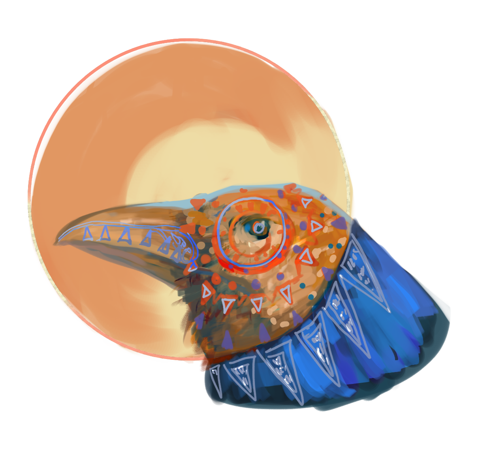

A conscientious leaner and illustrator, who is energetic and creative in the transforming of narrative and concept to visual forms.
School of Visual Arts, Bachelor of Fine Art (Fall 2015- Spring 2016)
Rhode Island School of Design, Bachelor of Fine Art (Fall 2016- Present)
Painting, a three-semester-session on the development of color and composition ; Drawing, expanded around the anatomical definition of figures, and the perspectival interpretation of architectural space ; Visual Computing, an introduction to Adobe softwares including Photoshop, Illustrator and Indesign. Illustration Concepts, the fundamental practice and knowledge of applied art.